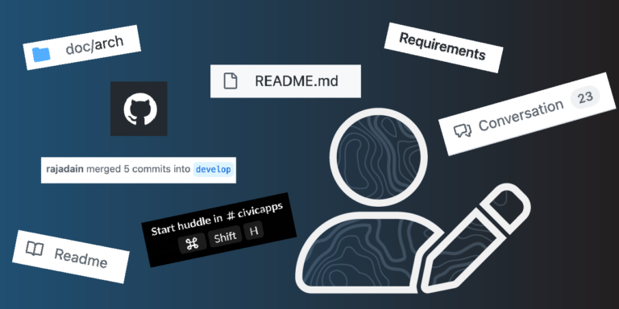

Last updated: Tue Dec 06 2022 | Permalink | RSS
Outline of a person holding a pen with screenshots of documentation text including 'README.md', 'Start Huddle in #CivicApps', 'Conversation (23)', 'Requirements', 'doc/arch','user merged 5 commits into develop', and the github logo
Note: This was originally published on the Azavea blog, but I wanted to put this here in case that blog disappeared.
And how to make sure your documentation is the best of the best
Documentation is vital for anything open source; from open hardware, to free recipes, to DIY repair tutorials, but it is especially vital when it comes to software. Whether you’re a user or a developer, documentation provides the “how to” for interacting with any piece of software.
Since I first started getting into software development two years ago, I’ve learned that documentation frequently assumes you already know how to use the item in question, and are using the docs as a reference. While acting as a reference material is one of documentation’s important functions, it cannot be the only function, but more on that later.
What is documentation?
First off, what counts as documentation? It’s not just the README.md in a project’s repository. Documentation also includes websites, other files in a project repository, comments in your code, commits in your codebase, and also chat app channels and threads. Developers also often look to Stack Overflow and GitHub discussions when looking for existing solutions for a given problem.
Having a single “source of truth” for documentation is ideal, but also largely impossible since there are so many different places we talk about our projects. Even so, there are good ways to distill these conversations into good documentation. At Azavea we are good at taking big architecture decisions and recording them in our repos as Architectural Decision Records, also known as ADRs.
ADRs are excellent for decisions with project-wide implications, but teams also make a lot of decisions in seemingly innocuous conversations. Sometimes we have a conversation on Slack, a conference call, or even, sometimes, in person. In many cases, any learnings from these conversations goes unrecorded. On the Civic Applications team (my team), we try to remedy this issue by putting notes from these chats into a relevant issue or pull request on the project’s Github repo.
Who is documentation for?
Knowing who you are writing your documentation for is key to recording the most important elements. When it comes to software, there are two primary types of people trying to learn how it works: developers and users.
You want your users to know how to use the app, especially parts that they won’t need to touch often and therefore won’t have as much practice and experience with. While it is important to do your best to design the app itself to be intuitive and to be usable without explanation, there will always be users who need an explicit explanation of how to use most features.
In open source spaces we also want to ensure our contributors know how to develop the app. By writing our issues and documentation as clearly as possible, contributors are more able to seamlessly jump into a project and follow the conventions of your project without issue.
Documentation is often frequently used as reference for developers who are experienced with this codebase. Having a skimmable documentation that is clearly visually and logically broken up helps to improve reference-ability so much.
Creating documentation that works for both users and developers is a mutually beneficial effort. When contributing developers know how to use the app in question, it is much easier to develop a smooth user experience. This being said, users do not need to know how to develop the app. My colleague, Terence, pointed out this is similar to a driver not needing to know how the car works to drive it; they just need to understand how to use the pedals, wheel, and signals.
How much does the reader know?
One question repeatedly surfaced during my discussions with colleagues about this topic: How much information should the documentation assume the reader already has? According to existing research, it’s important to assume nothing about the reader. Even though it’s important to provide content that avoids leaving readers in the dark, it’s also crucial to avoid overwhelming the reader with a giant wall of text or presenting the reader with extraneous, repetitive information.
In order to prevent overwhelming the reader we recommend visually breaking up the documentation so that it is easier to skim or scan through for important information. Breaking up large documents into smaller chunks is especially important while generating documentation for a library of components.
The shape of docs
In journalism, there is a concept called the “inverted pyramid of information” where the broadest, most important concepts are at the top of the piece and smaller, less relevant details appear later in the article. In talking with our User Experience Team Lead, Catherine Oldershaw, she told me that in UX this concept is often reversed, and instead manifests by managing the cognitive load of an application with a technique called “bubble up; drill down”. In other words, more digestible pieces of information bubble to the top and the author drills down to more complex details as the documentation is written.
“A great way to check this is to see if the information hierarchy matches the visual hierarchy. Key information (high in the information hierarchy) should also be visually prominent (high in the visual hierarchy), and more nuanced, detailed information should be lower in the information hierarchy and visual hierarchy.”
Catherine Oldershaw
During our conversation, Catherine also shared that developers tend to write documentation that follows the structure of the project, instead of following a structure that would improve readability. In order to maximize readability, it is much more helpful to structure the documentation in a manner that a developer new to the project would expect (i.e. with clear and skimmable sections), but this is not the norm. There is some serious discretion needed to determine this, but following an organization design the reader is familiar with can lead to great success.
Although it may seem counterintuitive to many developers, repeating important information while generating documentation is crucial and doesn’t take away from the piece’s skimmability. As devs, we are taught to write DRY code (Don’t Repeat Yourself) which certainly makes more maintainable code. This being said,documentation is for teaching as much for reference, and in a previous career I was trained that repetition is good for teaching. American reading teachers are trained with the idea that you begin to understand a word after you have heard or read it seven times.
While repetition may seem tedious to read, good documentation will explain a concept or abstraction just about any time it comes up. This reduces how much the reader needs to move back and forth to understand what they are reading and helps to avoid splitting their attention while reading about how to use or develop the app. Repetition also helps to make the documentation more skimmable, which is very desirable.
A Good Example:
Ant Design is a library of React components and represents a great example of effective documentation. When looking through their components pages, there is a consistent shape to each component’s write-up.
There is a small description of what each component is and what it is for, followed by a more in-depth description of the particulars of the components and why one may need those different settings. After these descriptions, there are examples of variations on the component that show what the different settings and props do.
AntD’s component docs also have code examples and interactive sandboxes that are entirely either “opt-in” or collapsed so as not to overwhelm the reader. The documentation finishes out with an API reference chart for experienced developers to find the particular details like default values or the list of options for any specific quality the dev is looking for.
The shape of these documents make it easy for devs new to AntD to easily get a descriptive walk through what this component does and why its different pieces are useful. Having an API chart at the bottom is also great for veteran AntD users to quickly look up specifics like default values, types, and a quick reminder. Having benefits for both audiences doesn’t detract from either experience, and the consistency of this format amongst all the different components means once you understand the pattern it’s very easy to look through any component’s doc for the details of any specific needs.
A specific odd example
As said above, documentation is more than just README.md and /docs pages. One of the bits we do well at Azavea, especially on the Civic Applications team, is using commit messages as documentation. This may seem odd to some developers, since many do not consider this to be documentation.
When looking at what may read at first as an odd piece of code, we check the git blame and see what commit and PR this piece of code came from. Ideally this PR will say what was trying to be solved as a whole and the commit will say what was specifically changed to do this.
Our local master of this technique is Senior Software Engineer, Terence Tuhinanshu of the Climate Applications team, who gave some great insight into this. At Azavea we try to write pull requests that address a particular issue and contain a list of commits that each make one change and title that change clearly in less than 50 characters (the limit to display in one line in GitHub), with optional details for further motivation. Each of these commits should appear in order, start with a present tense verb, and ideally read like steps in a recipe for how to make this PR.
Here are a few examples of this that Terence has put together over the years, including one while Terence was into Gitmoji
The recipe part here is a nice analogy since recipes often fit a clear format that we often skim through and recheck each time we want to make a particular piece of craft. These steps should each be performed on their own and written with simple language to describe the action taken. A developer looking through this should be able to look through these steps and see how to recreate this themself or undo this work.
So, what makes good documentation?
There are many things that contribute to quality of documentation but to boil it down to a referenceable list we can say that good documentation is:
- Skimmable
- Centralized (as much as possible)
- Consistently shaped
- Structured to the needs of the reader
- Holistic
- But also referenceable